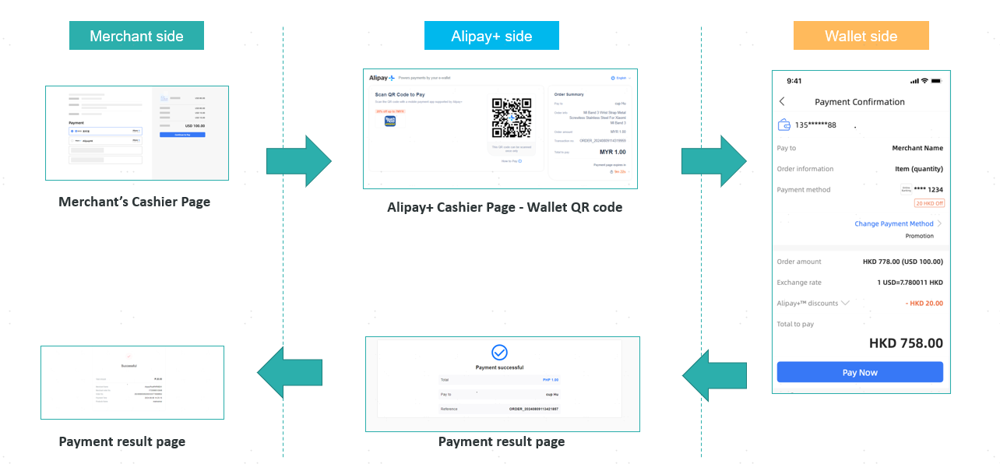
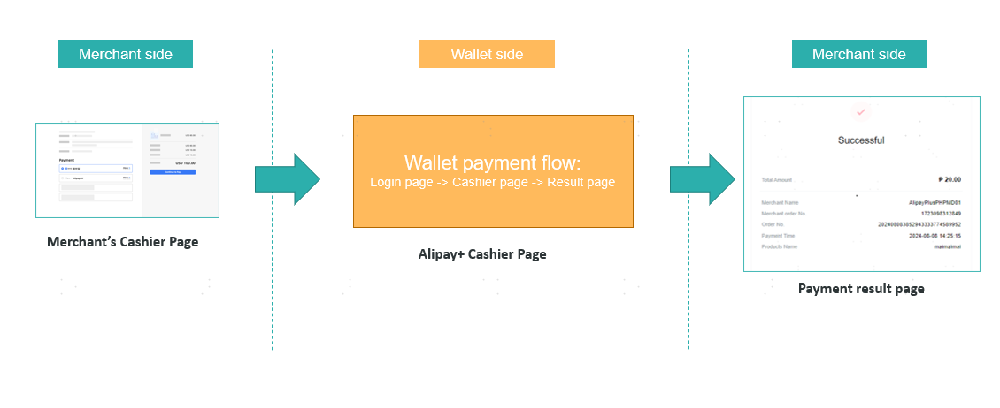
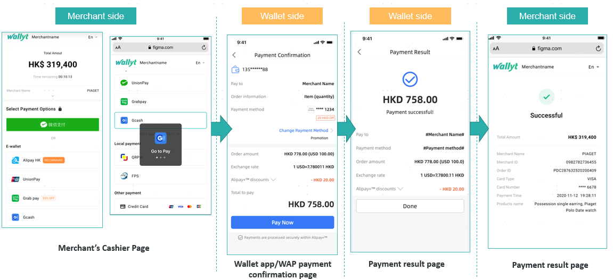
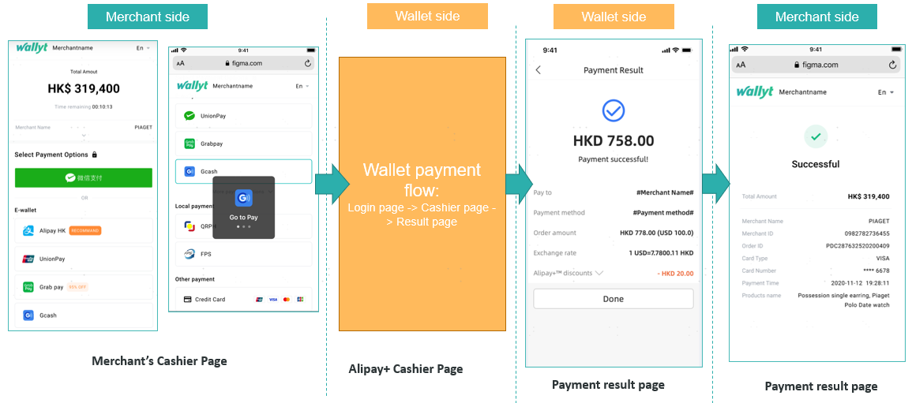
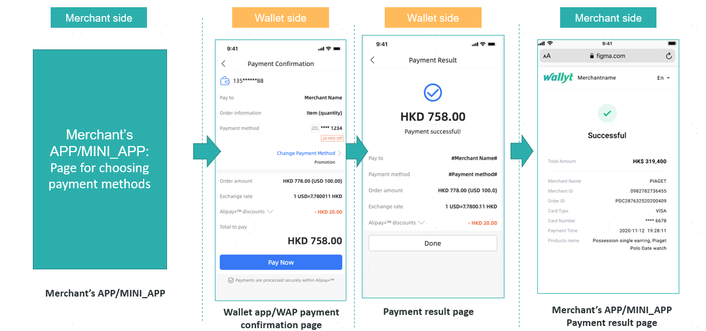

Alipay Plus+ 支付 QR Pay（Online）
線上支付
Alipay Plus+支付接口文檔
| 時間 | 版本 | 修改內容 |
|---|---|---|
| 2025-12-19 | 1.0 | 初稿 |
1引言
1.1文檔概述
支A+ Checkout API 是一種方便的付款方式。商家呼叫API介面，查詢支援哪些支付錢包進行支付。然後，客戶可以選擇不同的 A+ 錢包進行付款。根據商家發起的終端類型，會有不同的支付流程。例如，在WEB端，可能會顯示二維碼，支援用戶掃碼並使用錢包支付。在WAP端，可能會觸發用戶的錢包APP進行直接支付。
一般有以下幾種情況。
(1)在WEB端，可能會顯示二維碼，以支持用戶掃碼並使用錢包支付。

圖1 錢包掃碼網頁端支付流程
(2)對於部分不支援掃碼支付的錢包（列表如下）：DANA / BPI / Boost / Akulaku PayLater / BillEase，在網頁端，會顯示錢包的帳戶密碼登入頁面，支援用戶支付。

圖2 在網頁端輸入錢包帳戶密碼的支付流程
(3)用戶在WAP端打開收銀鏈接，選擇A+錢包支付，即可觸發錢包APP進行支付。

圖 3 WAP 端跳轉到錢包 APP 的支付流程
(4)用戶在WAP端打開收銀鏈接，選擇A+錢包支付，跳轉到錢包賬戶密碼登錄頁面，登錄後進行支付。

圖4 WAP端輸入錢包賬戶密碼的支付流程
(5)用戶在商家APP或小應用程式端開啟收銀臺，選擇A+錢包支付，即可觸發錢包APP進行支付。

圖5 商戶APP或MINI APP端的付款流程
1.2閱讀對象
供商戶平臺服務方技術或業務人員參考和查詢。
2數據格式
2.1 提交數據
採用 HTTPS 標準的 POST 協議， 為了保證接收方接收數據正確,傳輸數據必須簽名。
{
"service":"pay.aps.alipay.wappay",
"client_id":"1001",
"store_id":"1001001",
"order_no":"306f4f64bade41618b8e6d18b048c890",
"body":"Office cabinet, good quality, very beautiful",
"amount":1.0,
"notify_url":"http://localhost/pay/notify",
"client_ip":"127.0.0.1",
"payment_inst":"ALIPAYCN",
"attach":"",
"supplier":"",
"callback_url":"http://localhost/pay/result.html",
"nonce_str":"6fy019ar",
"sign":"41B8025E21ECF017BB37E12D30DFE954",
"lang":"en_US"
}
2.2 返回結果數據格式
正確返回：
{
"message":"SUCCESS",
"order_no":"306f4f64bade41618b8e6d18b048c890",
"transaction_id":"FTP202012181643190001",
"submit_time":"20201218164319",
"pay_url":" ",
"nonce_str":"i1ykzktz",
"sign":"8D03BC20ADD1040C12837966388C1FA6"
}
錯誤返回：
{
"message":"Missing Merchant ID",
JSON"errors":[
{
"field":"mch_id",
"message":"Missing Merchant ID",
"code":"MISSING_FIELD"
}
]
}
message返回非SUCCESS時表示接口調用出錯。
4數字簽名
為了保證資料傳輸過程中的資料真實性和完整性， 我們需要對資料進行數字簽名， 在接收簽名資料之後進行簽名校驗。
數字簽名有兩個步驟， 先按一定規則拼接要簽名的原始串， 再選擇具體的演算法和密鑰計算出簽名結果。
4.1 簽名原始串
無論是請求還是應答， 簽名原始串按以下方式組裝成字串： 1、 除 sign 欄位外， 所有參數按照欄位名的 ascii 碼從小到大排序後使用 QueryString 的格式（即key1=value1&key2=value2…） 拼接而成， 空值不傳遞， 不參與簽名組串。 2、 簽名原始串中， 欄位名和欄位值都採用原始值， 不進行 URL Encode。
3、 平臺返回的應答或通知消息可能會由於升級增加參數， 請驗證應答簽名時注意允許這種情況。
舉例：
調用某個接口， 接口有如下欄位：
{
"client_id":"1001",
"store_id":"1001001",
"service":" pay.aps.alipay.wappay",
"order_no":"Me08772e914454656bf26ec8996e35bb",
"amount":"1",
"body":"a chair",
"notify_url":"2031",
"payment_inst":"ALIPAYHK",
"client_ip":"127.0.0.1",
"nonce_str":"1409196838",
"sign":"22C9835251DCF58BB70C78FA8D6448BD"
}
正確的簽名欄位排序為：
amount=1&body=a chair&client_id=1001&client_ip=127.0.0.1&nonce_str=1409196838¬ify_url=2031&order_no=Me08772e914454656bf26ec8996e35bb&payment_inst=ALIPAYHK&service=pay.aps.alipay.wappay&store_id=1001001
4.2 簽名演算法
MD5 簽名 MD5 是一種摘要生成演算法， 通過在簽名原始串後加上商戶通信金鑰的內容， 進行 MD5 運算， 形成的摘要 字串即為簽名結果。 為了方便比較， 簽名結果統一轉換為大寫字元。
注意： 簽名時將字串轉化成位元組流時指定的編碼字元集應與參數 charset 一致。 MD5 簽名計算公式： sign = MD5 (原字串+&key=商戶祕鑰). toUpperCase
假設商戶祕鑰為：MjNiYWE4NGY2YTMxNDk2MTljODBkMjZkMjk0NjAxY2M=
如： 假設以下為 JSON傳入參數： i： 經過 a 過程 URL 鍵值對字典序排序後的字串 string1 為： amount=1&body=a chair&client_id=1001&client_ip=127.0.0.1&nonce_str=1409196838¬ify_url=2031&order_no=Me08772e914454656bf26ec8996e35bb&payment_inst=ALIPAYHK&service=pay.aps.alipay.wappay&store_id=1001001 ii： 經過 b 過程後得到 sign 為：
sign = md5(string1+&key=商戶祕鑰).toUpperCase
實際加密字符串為：
sign = md5(amount=1&body=a chair&client_id=1001&client_ip=127.0.0.1&nonce_str=1409196838¬ify_url=2031&order_no=Me08772e914454656bf26ec8996e35bb&payment_inst=ALIPAYHK&service=pay.aps.alipay.wappay&store_id=1001001&key=MjNiYWE4NGY2YTMxNDk2MTljODBkMjZkMjk0NjAxY2M=).toUpperCase
最終得到的簽名為：22C9835251DCF58BB70C78FA8D6448BD
sign與 lang字段不參與接口簽名，接口返回參數解密規則同理
4.3 請求頭說明
請求參數：
| 欄位名 | 變數名 | 必填 | 類型 | 說明 |
|---|---|---|---|---|
| 內容類型 | Content-Type | 是 | String(32) | 值：application/json，請求內容類別型 |
5 接口描述
5.1 下單接口
5.1.1 業務功能
初始化付款請求並通過請求返回第三方結帳頁面（WEB/WAP）
5.1.2 交互模式
請求：後臺同步請求模式
返回結果+通知： 後臺請求交互模式+後臺通知交互模式
5.1.3 請求參數列表
請求 url：https://api.fintechpaymenthub.com/openapi/v1/pay
通過 POST JSON 內容體進行請求接口
| 欄位名 | 變數名 | 必填 | 類型 | 說明 |
|---|---|---|---|---|
| 接口類型 | service | 是 | String(40) | 固定：pay.aps.alipay.wappay |
| 客戶端ID | client_id | 是 | String(32) | 商戶客戶端ID |
| 門店ID | store_id | 是 | String(50) | 門店ID |
| 商戶訂單號 | order_no | 是 | String(32) | 商戶系統內部的訂單號 32 個字元內、可包含字母 確保在商戶系統唯一 |
| 商品描述 | body | 是 | String(127) | 商品描述資訊 |
| 金額 | amount | 是 | String(15) | 訂單總金額（必須大於 0），單位為元。 |
| 通知地址 | notify_url | 是 | String(255) | 接收平臺通知的 URL，需給絕對路徑， 255 字符內 格 式如:http://wap.tenpay.com/tenpay.asp， 確保平臺能通過互聯網訪問該地址 |
| 終端IP | client_ip | 是 | String(16) | 訂單生成的機器 IP |
| 附加信息 | attach | 否 | String(127) | 商戶附加信息，可做擴展參數 |
| 回調地址 | callback_url | 否 | String(255) | 交易支付完成返回商戶指定的頁面，需給絕對路徑，255 字元以內，確保平臺能通過互聯網訪問該地址 |
| 隨機字串 | nonce_str | 是 | String(32) | 隨機字串，不長於 32 位，每次提交需傳不同的值 |
| 簽名 | sign | 是 | String(32) | 詳見第 4 章 “簽名規則” |
| 語言 | lang | 否 | String(32) | 語言 |
| 交易類型 | terminal_type | 是 | String(32) | 選擇性列舉值：WEB/WAP/APP/MINI_APP |
| 系統類型 | os_type | 否 | String(16) | 如果terminal_type=WAP/APP，則必須上傳。 可選枚舉值：IOS/ANDROID |
| 錢包名稱 | wallet_name | 否 | String(16) | 可選枚舉值： ALIPAY_HK AKULAKU_PAYLATER ALIPAY_CN BILLEASE BOOST BPI DANA GCASH KAKAOPAY KREDIVO_ID MPAY NAVERPAY RABBIT_LINE_PAY TNG TOSSPAY TRUEMONEY TINABA |
5.1.4 返回結果
數據按 JSON 的格式即時返回
| 欄位名 | 變數名 | 必填 | 類型 | 說明 |
|---|---|---|---|---|
| 商戶訂單號 | order_no | 是 | String(32） | 商戶生成的訂單號 |
| FTP訂單號 | transaction_id | 是 | String(26） | FTP生成的訂單號 |
| 提交時間 | submit_time | 是 | String(50） | 格式為 yyyyMMddhhmmss |
| 訂單信息 | pay_info | 是 | String(64) | 調用支付寶APP支付所需的訂單信息 |
| 結果信息 | message | 是 | String(500) | 描述查詢結果，SUCCESS表示成功，否則返回其他錯誤信息 |
| 隨機字串 | nonce_str | 是 | String(32) | 隨機字串，不長於 32 位 |
| 簽名 | sign | 是 | String(32) | 詳見第 4 章 “簽名規則” |
| 支付地址 | pay_url | 是 | String(1024) | 代表 normalUrl。將使用者重新導向至瀏覽器或 WebView 中的 WAP 或網頁的付款 URL。使用優先順序：pay_link > pay_info > pay_url。 |
| APP支付信息 | pay_info | 否 | String(1024) | 代表 applinkUrl。以連結形式呈現的付款 URL，可將使用者重新導向至應用程式，或如果未安裝 APP，則重新導向至 WAP 頁面。對於 Android，該鏈接是本機應用程序鏈接;對於 iOS，通用鏈接。使用優先順序：pay_link > pay_info > pay_url |
| 支付鏈接 | pay_link | 否 | String(1024) | 代表 schemeUrl。以 URL 配置形式呈現的付款 URL，可將使用者重新導向至應用程式。使用優先順序：pay_link > pay_info > pay_url |
| 付款碼 | pay_code | 否 | String(1024) | 程式碼的值。 有效值為： TEXT：表示程式碼可以直接以圖像的形式顯示在UI上。 URL：表示程式碼可以直接顯示在UI上為圖片，尺寸至少為256px * 256 px |
5.1.5測試用例
提供了測試用例方便調用
發起提交的數據：
| Example |
|---|
| { "service":"pay.aps.alipay.wappay", "client_id":"1001", "store_id":"1001001", "order_no":"306f4f64bade41618b8e6d18b048c890", "body":"Office cabinet, good quality, very beautiful", "amount":1.0, "notify_url":"http://localhost/pay/notify", "client_ip":"127.0.0.1", "terminal_type":"WEB", "attach":"sid=1", "callback_url":"http://localhost/pay/result.html", "nonce_str":"6fy019ar", "sign":"41B8025E21ECF017BB37E12D30DFE954", "lang":"en_US" } |
成功返回的數據：
| Example |
|---|
| { "message":"SUCCESS", "order_no":"306f4f64bade41618b8e6d18b048c890", "transaction_id":"FTP202012181643190001", "submit_time":"20201218164319", "pay_url":"xxx", "pay_info":"xxx", "pay_link":"xxx", "pay_code":"xxx", "nonce_str":"i1ykzktz", "sign":"8D03BC20ADD1040C12837966388C1FA6" } |
5.2 訂單查詢接口
5.2.1 業務功能
根據商戶訂單號或者FTP訂單號查詢平臺的具體訂單資訊。
5.2.2 交互模式
後臺系統調用交互模式
5.2.3 請求參數列表
請求 url：https://api.fintechpaymenthub.com/openapi/v1/query 通過 POST JSON 內容體進行請求
| 欄位名 | 變數名 | 必填 | 類型 | 說明 |
|---|---|---|---|---|
| 接口類型 | service | 是 | String(40) | 固定：pay.aps.query.wallet |
| 客戶端ID | client_id | 是 | String(32) | 商戶客戶端ID |
| 門店ID | store_id | 是 | String(50) | 門店ID |
| 商戶訂單號 | order_no | 否 | String(32） | 商戶生成的訂單號（order_no 和 transaction_id 至少一個必填，同時存在時 transaction_id 優先） |
| FTP訂單號 | transaction_id | 否 | String(26） | FTP訂單號（order_no 和 transaction_id 至少一個必填，同時存在時 transaction_id 優先） |
| 隨機字串 | nonce_str | 是 | String(32) | 隨機字串，不長於 32 位 |
| 簽名 | sign | 是 | String(32) | 詳見第 4 章 “簽名規則” |
| 語言 | lang | 否 | String(32) | 語言 |
5.2.4 返回結果
數據按 JSON 的格式即時返回
| 欄位名 | 變數名 | 必填 | 類型 | 說明 | |
|---|---|---|---|---|---|
| FTP訂單號 | transaction_id | 是 | String(26) | FTP生成的訂單號 | |
| 商戶訂單號 | order_no | 是 | String(32) | 商戶生成的訂單號 | |
| 門店ID | store_id | 是 | String(50) | 門店ID | |
| 提交時間 | submit_time | 是 | String(32) | 格式為 yyyyMMddhhmmss | |
| 交易狀態 | trade_state | 是 | String(32) | SUCCESS—支付成功 NOTPAY—待付款 PROCESSING—處理中 REFUND—退款 CANCEL—關閉 FAIL—失敗 | |
| 金額 | amount | 是 | Double | 訂單總金額（必須大於 0），單位為人民幣為元。如訂單總金額為 1 元，amount 為 1。 | |
| 幣種 | currency | 是 | String(3) | 3 位元 ISO 貨幣代碼，大寫字母，人民幣為 CNY。 | |
| 支付完成時間 | pay_finish_time | 是 | String(32) | 支付完成時間，格式為 yyyyMMddhhmmss， 如2009 年 12 月 27 日 9 點 10 分 10 秒錶示為20091227091010。時區為 GMT+8 beijing。 | |
| 商品描述 | body | 是 | String(127) | 商品描述資訊 | |
| 退款金額 | refund_amount | 是 | Double | 退款金額，單位為人民幣為元。如訂單總金額為 1 元，amount 為 1。 | |
| 第三方商戶號 | out_transaction_id | 是 | String(32) | 對應支付寶交易記錄賬單詳情中的交易號 | |
| 附加信息 | attach | 否 | String(127) | 商家數據包，原樣返回 | |
| 結果信息 | message | 是 | String(500) | 描述查詢結果，SUCCESS表示成功，否則返回其他錯誤信息 | 描述查詢結果，SUCCESS表示成功，否則返回其他錯誤信息 |
| 隨機字串 | nonce_str | 是 | String(32) | 隨機字串，不長於 32 位 | |
| 簽名 | sign | 是 | String(32) | 詳見第 4 章 “簽名規則” |
5.2.5測試用例
提供了測試用例方便調用
發起提交的數據：
| Example |
|---|
| { "service":"pay.aps.query.wallet", "order_no":"", "transaction_id":"FTP202012181643190001", "client_id":"1001", "store_id":"1001001", "nonce_str":"dbl6ox96", "sign":"A56EA405682D4F10A61FB269A27F15E2", "lang":"en_US" } |
成功返回的數據：
| Example |
|---|
| { "message":"SUCCESS", "transaction_id":"FTP202012181643190001", "order_no":"306f4f64bade41618b8e6d18b048c890", "store_id":"1001001", "submit_time":"20201218164319", "trade_state":"SUCCESS", "amount":1, "currency":"HKD", "pay_finish_time":"20201110111036", "body":"Office cabinet, good quality, very beautiful", "refund_amount":0, "nonce_str":"ywhep5pw", "sign":"46DD52B899DDD9FD37DE3A9CE4CB3281", "out_transaction_id":"127500000158202011108188370093", "attach":"" } |
5.3 退款接口接口
5.3.1 業務功能
商戶針對某一個已經成功支付的訂單發起退款， 操作結果在同一會話中同步返回。
一、 退款方式
目前只支持原路返回退款。
說明：退款到銀行卡則是非即時的，每個銀行的處理速度不同，一般發起退款後 1-3 個工作日內到賬。
同一筆單的部分退款需要設置相同的訂單號和不同的 out_refund_no 。一筆退款失敗後重新提交，要採用原來的 out_refund_no。總退款金額不能超過用戶實際支付金額(現金券金額不能退款)。
二、 退款限制
商戶在退款操作時應該注意退款限制，避免發起不會成功的退款請求，下麵是主要的退款限制：
1. 在平臺中，只要退款累計金額不超過交易單支付總額，一筆交易單可以多次退款， 退款申請單號（退款接口中有此參數）唯一確定一次退款，而不是交易單號確定一次退款。 退款申請單號由商戶生成，所以商戶
一定要保證退款申請單的唯一性。商家在退款過程中要特別注意，只有在能確定退款失敗的情況下，才能重新發起另一筆退款。
2. 目前大多數銀行都會支持全額退款和部分退款，但是也有少數銀行不支持全額退款或部分退款，或者
不支持退款。在這種情況下，商戶可以與賣家協調，退倒支付寶賬戶中。
目前只提供無鑰退款接口，需要有鑰退款接口的商戶，請聯繫商務說明。
5.3.2 交互模式
後臺系統調用交互模式
5.3.3 請求參數列表
請求 url：https://api.fintechpaymenthub.com/openapi/v1/refund 通過 POST JSON 內容體進行請求
| 欄位名 | 變數名 | 必填 | 類型 | 說明 |
|---|---|---|---|---|
| 接口類型 | service | 是 | String(40) | 固定：unified.trade.refund |
| 客戶端ID | client_id | 是 | String(32) | 商戶客戶端ID |
| 門店ID | store_id | 是 | String(50) | 門店ID |
| 商戶訂單號 | order_no | 是 | String(32） | 原商戶生成的訂單號 |
| FTP訂單號 | transaction_id | 是 | String(26） | 原訂單FTP生成的訂單號 |
| 商戶退款單號 | out_refund_no | 是 | String(32） | 商戶退款單號， 32 個字元內、可包含字母,確保在商戶系統唯一。同個退款單號多次請求， 平臺當一個單處理，只會退一次款。 如果出現退款不成功，請採用原退款單號重新發起，避免出現重複退款。 |
| 備註 | remarks | 否 | String(255) | 退款備註 |
| 退款金額 | refund_fee | 是 | String(15) | 退款總金額,單位為元,可以做部分退款 |
| 隨機字串 | nonce_str | 是 | String(32) | 隨機字串，不長於 32 位 |
| 簽名 | sign | 是 | String(32) | 詳見第 4 章 “簽名規則” |
| 語言 | lang | 否 | String(32) | 語言 |
5.3.4 返回結果
數據按 JSON 的格式即時返回
| 欄位名 | 變數名 | 必填 | 類型 | 說明 | |
|---|---|---|---|---|---|
| FTP訂單號 | transaction_id | 是 | String(26) | FTP生成的訂單號 | |
| 商戶訂單號 | order_no | 是 | String(32) | 商戶生成的訂單號 | |
| 商戶退款單號 | out_refund_no | 是 | String(32） | 商戶退款單號，32 個字元內、可包含字母,確保在商戶系統唯一。同個退款單號多次請求， 平臺當一個單處理，只會退一次款。如果出現退款不成功，請採用原退款單號重新發起，避免出現重複退款。 | |
| 提交時間 | submit_time | 是 | String(32) | 格式為 yyyyMMddhhmmss | |
| 訂單金額 | amount | 是 | Double | 訂單金額,單位為元 | |
| 退款金額 | refund_amount | 是 | Double | 退款金額,單位為元 | |
| 結果信息 | message | 是 | String(500) | 描述查詢結果，SUCCESS表示成功，否則返回其他錯誤信息 | 描述查詢結果，SUCCESS表示成功，否則返回其他錯誤信息 |
| 隨機字串 | nonce_str | 是 | String(32) | 隨機字串，不長於 32 位 | |
| 簽名 | sign | 是 | String(32) | 詳見第 4 章 “簽名規則” |
5.3.5測試用例
提供了測試用例方便調用
發起提交的數據：
| Example |
|---|
| { "service":"unified.trade.refund", "client_id":"1001", "store_id":"1001001", "order_no":"", "transaction_id":"FTP202012181643190001", "out_refund_no":"T1608281094423", "remarks":"Test Pay Orders", "refund_fee":1.0, "nonce_str":"f58spdlb", "sign":"67482CCCB05D9A943653A01B0AED1516", "lang":"en_US" } |
成功返回的數據：
| Example |
|---|
| { "message":"SUCCESS", "order_no":"306f4f64bade41618b8e6d18b048c890", "transaction_id":"FTP202012181643190001", "out_refund_no":"T1608281094423", "submit_time":"20201218164454", "amount":1, "refund_amount":1, "nonce_str":"cmk6nemf", "sign":"D41D8CD98F00B204E9800998ECF8427E" } |
5.4退款查詢接口
5.4.1 業務功能
提交退款申請後， 通過調用該接口查詢退款狀態。
5.4.2 交互模式
後臺系統調用交互模式
5.4.3 請求參數列表
請求 url：https://api.fintechpaymenthub.com/openapi/v1/refundQuery 通過 POST JSON 內容體進行請求
| 欄位名 | 變數名 | 必填 | 類型 | 說明 |
|---|---|---|---|---|
| 接口類型 | service | 是 | String(40) | 固定：unified.trade.refundquery |
| 客戶端ID | client_id | 是 | String(32) | 商戶客戶端ID |
| 門店ID | store_id | 是 | String(50) | 門店ID |
| 商戶訂單號 | order_no | 否 | String(32） | 退款返回的商戶訂單號，也是訂單的商戶訂單號 |
| FTP訂單號 | transaction_id | 否 | String(26） | 退款返回的FTP訂單號 |
| 商戶退款單號 | out_refund_no | 否 | String(32） | 商戶生成的退款單號 |
| 第三方退款單號 | to_order_sn | 否 | String(255) | 第三方退款單號，如果同時存在優先順序為： to_order_sn > out_refund_no > transaction_id > order_no |
| 隨機字串 | nonce_str | 是 | String(32) | 隨機字串，不長於 32 位 |
| 簽名 | sign | 是 | String(32) | 詳見第 4 章 “簽名規則” |
| 語言 | lang | 否 | String(32) | 語言 |
5.4.4 返回結果
數據按 JSON 的格式即時返回
| 欄位名 | 變數名 | 必填 | 類型 | 說明 |
|---|---|---|---|---|
| FTP訂單號 | transaction_id | 是 | String(26) | 對應訂單的FTP訂單號 |
| 商戶訂單號 | order_no | 是 | String(32) | 對應訂單的商戶訂單號 |
| 退款金額 | total_fee | 是 | Double | 退款總金額,單位為元 |
| 退款筆數 | refund_count | 是 | Int | 退款記錄數 |
| 商戶退款單號 | out_refund_no_n | 是 | String(32） | 商戶退款單號， 32 個字元內、可包含字母,確保在商戶系統唯一。同個退款單號多次請求， 平臺當一個單處理，只會退一次款。 如果出現退款不成功，請採用原退款單號重新發起，避免出現重複退款。 第一筆退款返回字段：out_refund_no_1， 第二筆退款返回字段：out_refund_no_2， 以此類推。 |
| FTP退款訂單號 | refund_id_n | 是 | String(32） | FTP退款訂單號 |
| 第三方退款單號 | to_order_sn_n | 是 | String(32） | 第三方退款單號 |
| 退款金額 | refund_amount_n | 是 | Double | 退款金額,單位為元 |
| 退款時間 | refund_time_n | 是 | String(14) | yyyyMMddHHmmss |
| 退款狀態 | refund_status_n | 是 | String(16) | 退款狀態： SUCCESS—退款成功 FAIL—退款失敗 PROCESSING—退款處理中 NOTSURE—未確定，需要商戶原退款單號重新發起CHANGE—轉入代發，退款到銀行發現用戶銀行賬戶作廢或者被凍結，導致原路退款銀行卡失敗，資金迴流到商戶的現金帳號，需要商戶人工幹預，通過線下或者平臺轉賬的方式進行退款。 |
| 結果信息 | message | 是 | String(500) | 描述查詢結果，SUCCESS表示成功，否則返回其他錯誤信息 |
| 隨機字串 | nonce_str | 是 | String(32) | 隨機字串，不長於 32 位 |
| 簽名 | sign | 是 | String(32) | 詳見第 4 章 “簽名規則” |
5.4.5測試用例
提供了測試用例方便調用
發起提交的數據：
| Example |
|---|
| { "service":"unified.trade.refundquery", "client_id":"1001", "store_id":"1001001", "transaction_id":"FTP202012181643190001", "order_no":"", "out_refund_no":"", "to_order_sn":"", "nonce_str":"f5dzux6u", "sign":"5F2C7E8634D912ACDE257B7E3A8F2337", "lang":"en_US" } |
成功返回的數據：
| Example |
|---|
| { "message":"SUCCESS", "transaction_id":"FTP202012181624320001", "order_no":"TALWEBO20210514114611632", "total_fee":1, "refund_count":1, "nonce_str":"401n5buh", "out_refund_no_1":"T9802e9e18ff340548357bfba730d407", "refund_id_1":"FTP202105141152540001", "refund_amount_1":1, "to_order_sn_1":"121500000214202105141132335702", "refund_time_1":"20210514115254", "refund_status_1":"SUCCESS", "sign":"7A5CA8D8BD0F4E9F78641F9433FD3A4D" } |
5.5 支付通知接口
5.5.1 業務功能
支付通知URL是notify_url在Web支付中提交的參數。支付完成後，平臺會將相關支付和用戶信息發送到URL。商家需要接收和處理此類信息。
在進行後臺通知交互時，如果平臺收到商家的響應不是純字符串“成功”，或者5秒後給出響應，那麼平臺將視爲不成功，平臺會採取一定的策略（通知間隔：0/15/15/30/180/1800/1800/1800/1800/3600 單位：秒） 間歇性地重新啓動通知，盡最大努力提高通知的成功率，但不能保證通知的最終成功。
由於存在重新發送後端通知的情況，因此相同的通知可能會多次發送到商家系統。商家系統必須能夠以正確的方式處理重複通知。
平臺推薦的方法是在收到通知後，首先檢查相應業務數據的狀態，判斷通知是否已被處置，如果沒有處置，則進行其他處置，如果已經處置，則直接返回純字符串成功。在對業務數據進行狀態檢查和處置之前，應採用數據鎖進行併發控制，避免功能中數據重複插插導致數據混亂。
通知：商家後臺收到參數通知後。 我需要根據自己業務系統的訂單號和訂單金額在收到的通知中驗證out_trade_no和total_fee。 並且只有在驗證一致後才允許更新數據庫中的訂單狀態。
建議：創建訂單併發起支付後，如果在 5 分鐘內沒有收到支付成功通知請求，建議發起訂單查詢接口，每 5 秒查詢一次，共 12 次查詢。
後端通知將通過發送付款請求的notify_url以 POST 模式返回。
5.5.2 交互模式
後臺通知模式
5.5.3 返回參數列表
數據按 JSON 的格式即時返回
| 欄位名 | 變數名 | 必填 | 類型 | 說明 | |
|---|---|---|---|---|---|
| FTP訂單號 | transaction_id | 是 | String(26) | FTP生成的訂單號 | |
| 商戶訂單號 | order_no | 是 | String(32) | 商戶生成的訂單號 | |
| 第三方商戶號 | out_transaction_id | 是 | String(32) | 對應支付寶交易記錄賬單詳情中的交易號 | |
| 門店ID | store_id | 是 | String(50) | 門店ID | |
| 提交時間 | submit_time | 是 | String(32) | 格式為 yyyyMMddhhmmss | |
| 交易狀態 | trade_state | 是 | String(32) | SUCCESS—支付成功 PROCESSING—處理中 CANCEL—關閉 FAIL—失敗 | |
| 訂單金額 | amount | 是 | Double | 訂單總金額（必須大於 0），單位為人民幣為元。如訂單總金額為 1 元，amount 為 1。 | |
| 訂單幣種 | currency | 是 | String(3) | 3 位元 ISO 貨幣代碼，大寫字母，人民幣為 CNY。 | |
| 付款方 | payer | 否 | String(50) | 付款方 | |
| 支付完成時間 | pay_finish_time | 是 | String(32) | 支付完成時間，格式為 yyyyMMddhhmmss， 如2009 年 12 月 27 日 9 點 10 分 10 秒錶示為20091227091010。 時區為 GMT+8 beijing。 | |
| 用戶標識 | openid | 否 | String(128) | 用戶支付寶的帳戶 | |
| 附加信息 | attach | 否 | String(127) | 商家數據包，原樣返回 | |
| 交易類型 | trade_type | 是 | String(32) | 固定：pay.alipay.webpay.intl | |
| 支付幣種 | pay_currency | 否 | String(32) | 支付幣種，需要根據實際情況返回 | |
| 結果信息 | message | 是 | String(500) | 描述查詢結果，SUCCESS表示成功，否則返回其他錯誤信息 | 描述查詢結果，SUCCESS表示成功，否則返回其他錯誤信息 |
| 隨機字串 | nonce_str | 是 | String(32) | 隨機字串，不長於 32 位 | |
| 簽名 | sign | 是 | String(32) | 詳見第 4 章 “簽名規則” |
5.5.4測試用例
提供了測試用例方便調用
發起提交的數據：
| Example |
|---|
| { "message":"SUCCESS", "order_no":"20f410d9b65741f380ce4cc56cb220b6", "transaction_id":"FTP202012181646490001", "out_transaction_id":"2020111022001311418632678595", "store_id":"1001001", "submit_time":"20201218164649", "trade_state":"SUCCESS", "amount":1, "currency":"HKD", "pay_finish_time":"20201110111036", "nonce_str":"2074xi9v", "trade_type":"pay.alipay.webpay.intl", "sign":"8706AC26F6BC4B8AE0380CE85C5B33C2", "pay_currency":"HKD", "openid":"2088802397211412" } |
6錯誤碼說明
| 錯誤碼 | 說明 |
|---|---|
| MISSING_FIELD | 字段未傳入 |
| INVALID_FIELD | 字段校驗錯誤 |
| NO_EXISTS | 數據不存在 |
| OTHER | 其他錯誤 |
| INVALID_SCOPE | 數據超出範圍 |
| INVALID_LENGTH | 數據長度超過限制 |
| INCORRECT_SIGNATURE | 無效簽名 |
| EXPIRED_ORDER | 訂單已過期 |
| PAY_GATEWAY_FAIL | 支付網關異常 |
| UNKNOWN_ERROR | 未知錯誤 |
| XML_FORMAT_ERROR | XML格式錯誤 |
| REQUIRE_POST_METHOD | 請使用post方法 |
| ACCESS_DENIED | 拒絕訪問 |
| POST_DATA_EMPTY | post數據爲空 |
| NOT_UTF8 | 編碼格式錯誤 |
| ORDER_CLOSED | 訂單已關閉 |
| NO_AUTH | 權限不足 |
| LACK_PARAMS | 缺少參數 |
| INVALID_STATUS | 非法狀態 |
| INVALID_SERVICE | 非法接口類型 |
| SN_IS_EXISTS | 編號已存在 |
| NOTIFY_FAIL | 通知異常 |
| URL_FORMAT_ERROR | URL格式不正確 |
| IP_FORMAT_ERROR | IP格式不正確 |
| DATE_FORMAT_ERROR | 日期格式不正確 |
| TRADE_NOT_EXIST | 交易不存在 |
| TRADE_HAS_SUCCESS | 交易已被支付 |
| TRADE_FAILED | 交易失敗 |
| TRADE_TIMEOUT | 交易超時 |
| INVALID_ORDER_STATUS | 無效的訂單狀態 |
| REVERSE_FAILED | 撤銷授權失敗 |
| DEDUCTIONS_FAILED | 扣款失敗 |
| REFUND_FAILED | 扣款失敗 |
| INVALID_CLIENT_ID | 無效客戶端ID |
| INVALID_STORE_ID | 無效門店ID |
| INVALID_AMOUNT | 交易金額不正確 |
| INVALID_REFUND_FEE | 退款金額不正確 |
| VALID_FLOW_FAIL | 請求過於頻繁 |
| UNSUPPORTED_SERVICE | 不支持的接口類型 |
| DATA_NOT_EXIST | 查詢的數據不存在 |
| ACCOUNT_LOCKED | 商戶或門店的賬號被鎖定 |